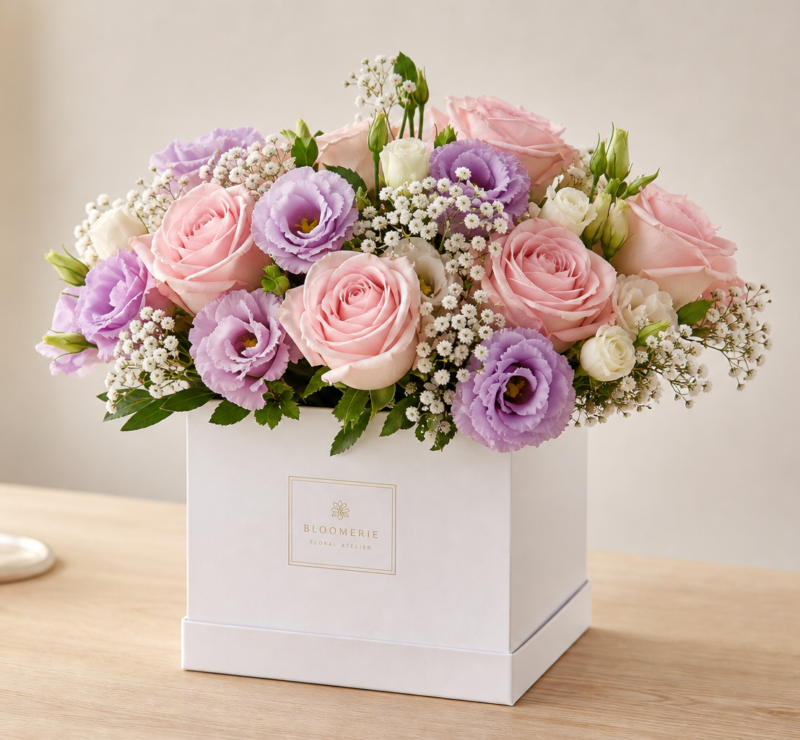

بازه تحویل واقعیبر اساس ظرفیت و منطقه
گلفروشی هوشمند و انسانی
احساس درست،در زمان درست.
گل و گیاه را بر اساس مناسبت، گیرنده و زمان تحویل انتخاب کنید؛ باقی مسیر را فلورا دقیق و شفاف پیش میبرد.
تحویل قابل زمانبندی هماهنگی جایگزینی

انتخاب امروزترکیب تازه گلآراآماده ارسال در ۹۰ دقیقه
هماهنگی جایگزینیبدون تغییر ناخواسته
تازهبودن تضمینشدهکنترل پیش از ارسال
پشتیبانی انسانیاز انتخاب تا تحویل
شروع ساده
همه محصولاتبا نیت خودتان آغاز کنید
مناسبت را انتخاب کنید؛ فلورا ترکیبهای همخوان و قابل تحویل را نشان میدهد.
منتخب گلآراها
کمتر، اما دقیقتر
راهنمای هدیه فلورا
در سه دقیقه به انتخاب مناسب برسید
در چهار گام کوتاه، گیرنده، مناسبت، حس و زمان تحویل را مشخص کنید؛ فلورا پیشنهادهای قابل تحویل را مرتب میکند
انتخاب هدیه را شروع کنید۰۱
گیرنده
برای چه کسی هدیه میخرید؟
۰۲
مناسبت
برای چه موقعیتی؟
۰۳
حس هدیه
چه حسی میخواهید منتقل کنید؟
۰۴
زمان تحویل
چه زمانی باید برسد؟